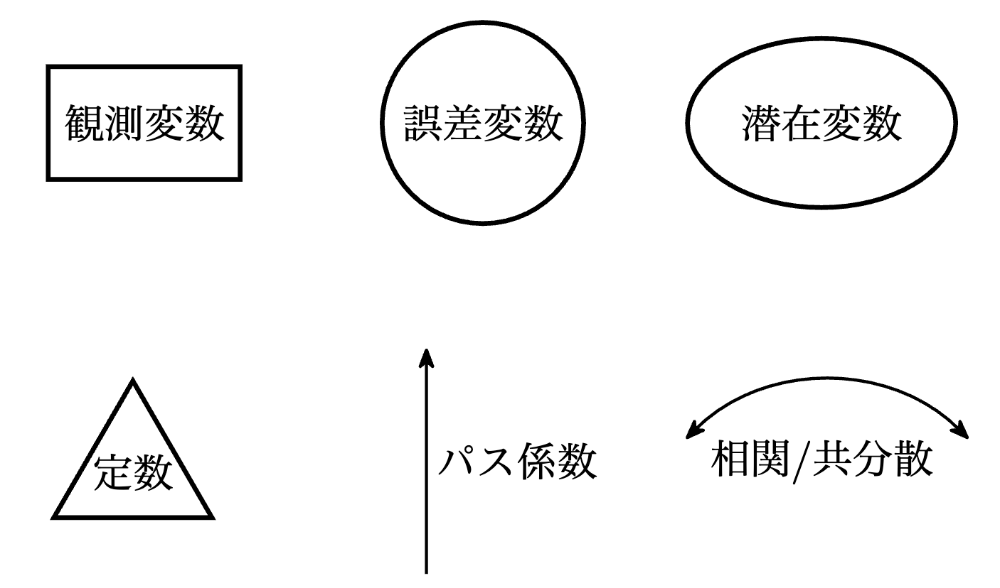
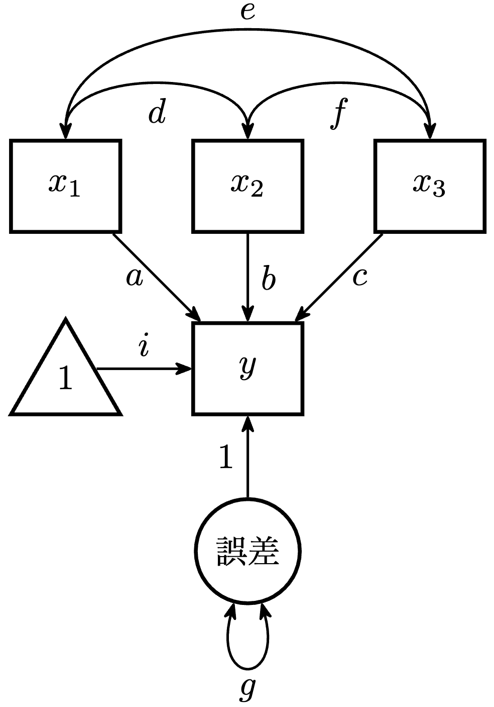
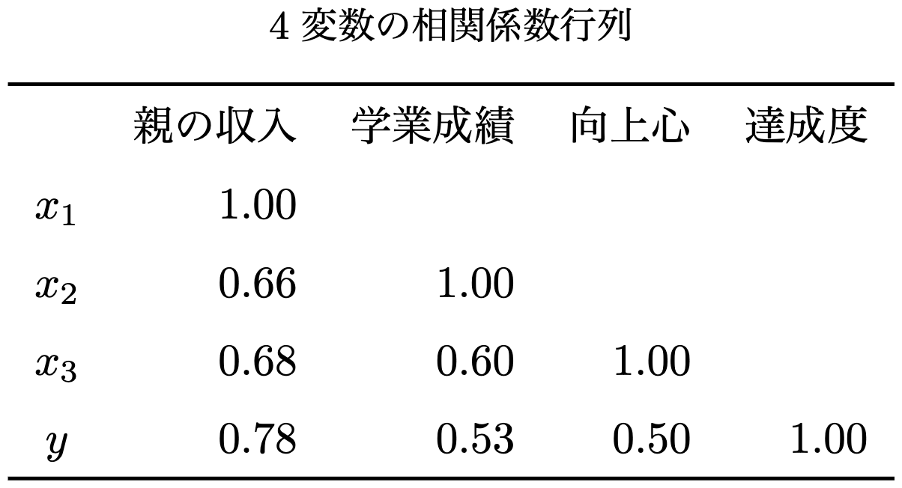

vec_r <- c(0.78, 0.53, 0.50)
mat_c <- rbind(
c(1.00, 0.66, 0.68),
c(0.66, 1.00, 0.60),
c(0.68, 0.60, 1.00)
)
# 逆行列を求める
solve(mat_c, vec_r) |> round(2)[1] 0.80 0.05 -0.07パスモデル（path models），パス解析（path analysis）を通じて，パス図（path diagram）の考え方を習得し，回帰分析より柔軟なモデル構成に進みましょう。
以下は，変数間の影響関係を記述するモデル式をグラフィカルに示す，パス図と呼ばれる描画手法 に用いられる記号，部品を示したものです。 
モデル式とパス図は一対一に対応します。AMOS（Analysis of MOment Structures; 積率構造分析）というソフトウェアが「お絵かきソフト」のように図を描くことでSEMが実行できるのも，このため（パス図を描けばモデル式が出力可能）です。なお，その特質が手法をおおいに普及させた，という側面もあります。
よくみるパス図の慣行にしたがって，円と楕円を分けていますが，本質的には同じです。直接観測されない変数である誤差変数や潜在変数をマルで囲んで表します。多くの場合，「誤差」は円で，「能力」や「性格」など構成概念を表す潜在変数は楕円で表されますが，誤差を楕円で囲むこともありますし，円で囲まない記法もあります。
三角形で定数（回帰分析における切片）を表します。ただし，基本的なSEMでは標準化されたデータを扱うため，パス図において主に使用されるパーツは，上図の三角形を除いた5つ（円／楕円を区別しなければ4つ）です。
単方向の矢印で変数間を結び，両者の影響関係を表します。矢印を出す側が独立変数（説明変数）で，矢印を受ける側が従属変数（目的変数）です。その影響の程度，すなわち回帰分析における回帰係数を，パスモデルではパス係数（path coefficients）と呼び，矢印の上に表記します。
双方向矢印は共変動の関係を表します。すなわち相関係数や共分散です。なお，単方向の矢印が２変数の間でお互いに向き合う（\(X\)が\(Y\)に影響し，\(Y\)が\(X\)に影響する）というモデルを構成することは（基本的には）できません。
3つの独立変数から1つの従属変数を説明，予測する重回帰モデル \[y = i + ax_1+bx_2+cx_3+誤差\] を考えましょう。図の表記の便宜上，切片を \(i\) とし，\(e\) として表されることの多い誤差項を \(誤差\) と表すこととします。
例えば，親の収入（\(x_1\)）と学業成績（\(x_2\)）と学業上の向上心（\(x_3\)）が，定量的に把握できる達成度（\(y\)）に与える影響の分析を想定します。
パス図で表すと以下の通りです。

定数である切片は，三角形で表される，常に値 \(1\) をとる変数からの係数 \(i\) として表されます。
誤差変数においては，相関，共分散のような連動関係を表す双方向矢印が自分自身に刺さっています。自分自身との共分散なので，すなわち分散（標準化していれば標準偏差）を表します。ただ，この表記は省略される場合も多く，その場合は単に，分散を表すパラメータ（この場合は\(g\)）のみを表示します（その意味では，独立変数の分散を表す，自分自身にループする双方向矢印はほとんどの場合に省略されている，ともいえます［ループ双方向矢印を独立変数に示す場合もある］）。
パス係数は必ずしも標準化解に統一する必要はありませんが，以降は，データを標準化し，以下の100人分のデータから計算された相関係数行列に基づいて考察することとします。

重回帰モデルは切片を除いて \[y = ax_1+bx_2+cx_3+誤差\] と表され，三角形と矢印と \(i\) を除いたものが該当のパス図になります。
ここで，4変数間の相関係数と，（定数項を除いた）パス図の対応を考えましょう。
相関係数行列は，４つの変数の連動関係を示しています。そこに方向はありません。
一方で，取り上げているパスモデル（重回帰モデル）においては，\(a\)，\(b\)，\(c\) のパス係数（標準化偏回帰係数）と独立変数間の相関係数 \(d\)，\(e\)，\(f\)，誤差の分散（標準偏差） \(g\) といったモデルを特徴づけるパラメータが導入され，変数 \(y\)（達成度）は他の3つの影響を受けて値が変化する，という考え（仮説，モデル） が示されています。
これはつまり \[ x_1 と y \ の相関 = a + (d \times b) + (e\times c) \] のように再表現したということです。\(x_1\) と \(y\) はどのように連結（相関）しているのか，トレーシングルール（tracing rules）と呼ばれる考え方で，適切な \(x_1\) と \(y\) の経路（パス）を特定し，上式の関係を導くことができます。
パス図において，２つの変数または１つの変数に注目し，その変数に至るパスを辿って，各パスの係数を掛け，可能なパスすべての結果を足し合わせます。ただし，
単方向矢印を逆向きに辿り始めることは可能ですが，順行したらもう逆行はできません。
一回通った変数を，もう一度通過することはできません。
経路には，双方向矢印を最大でも１つしか含められません。
\(x_1\) と \(y\) に注目しましょう。まず，ダイレクトなパスがあります。パス係数は \(a\)（のみ）です。次に，双方向矢印（相関 \(d\)）を辿って\(x_2\)に行き，\(x_2\) から \(y\) に至るパスがあります（係数 \(b\) ）。したがって，\((d \times b)\) です。最後に，\((e \times c)\)となります。\(x_1\) から \(x_3\) に行って，\(y\) に至る経路です。これらを足し合わせて \[ x_1 と y \ の相関 = a + (d \times b) + (e\times c) \] となります。
\((d \times f \times c)\) もパスとしてはあるではないか，と思われるかもしれませんが（私は初見そう思った\(\cdots\)），これは「双方向矢印は最大でも１つしか含められない」に抵触するため採用できません。
同様（ぜひ確認してみましょう）にして，各独立変数と従属変数の相関係数について以下が得られます。 \[\begin{align*} x_1 と y \ の相関 = a + (d \times b) + (e\times c)\\ x_2 と y \ の相関 = b + (d \times a) + (f\times c)\\ x_3 と y \ の相関 = c + (f \times b) + (e\times a) \end{align*}\]
4変数の相関係数行列から \[\begin{align*} 0.78 = a + (0.66 \times b) + (0.68 \times c)\\ 0.53 = b + (0.66 \times a) + (0.60 \times c)\\ 0.50 = c + (0.60 \times b) + (0.68 \times a) \end{align*}\] となり，\(a=0.80\)，\(b=0.05\)，\(c=-0.07\)を得ます。
vec_r <- c(0.78, 0.53, 0.50)
mat_c <- rbind(
c(1.00, 0.66, 0.68),
c(0.66, 1.00, 0.60),
c(0.68, 0.60, 1.00)
)
# 逆行列を求める
solve(mat_c, vec_r) |> round(2)[1] 0.80 0.05 -0.07つまり，「親の収入（\(x_1\)）」と「達成度（\(y\)）」の相関は，\(x_1\)の直接的な影響\(a\)と，「学業成績（\(x_2\)）」を経由して与える影響\((d\times b)\)と，「向上心（\(x_3\)）」から伝わる影響\((e\times c)\)を合わせたものとして表現された（相関をモデル化した）ということがわかります。実際， \[\begin{align*} x_1 と y \ の相関 =& 0.80 + (0.66 \times 0.05) + (0.68 \times (-0.07))\\ =&0.80 + 0.033 - 0.0476=0.7854 \end{align*}\] となり，丸め誤差はありますが相関係数が復元されます。
同様に，\(x_2\) と \(y\) の相関は\(0.536\)，\(x_3\)と\(y\)は\(0.504\)です。
先に，「パス図において，２つの変数または１つの変数に注目し，その変数に至るパスを辿って，各パスの係数を掛け，可能なパスすべての結果を足し合わせる」ことをトレーシングルールとして示しました。
従属変数 \(y\) について，\(y\) 自身に至るパスを考えてみましょう。自分との共分散（相関）ですから，すなわち \(y\) の分散（標準偏差）です。
順行するまでは逆行できるので，\(x_1\) に行って \(y\) に戻ってくる経路 \(a \times a\) がまず考えられます。\(b^2\)，\(c^2\) も同様です。
また，\(y\) から \(x_1\) に行って \(x_2\) に渡って \(y\) に戻ってくる，すなわち \((a\times d \times b)\) のパスがあります。これは \(b\rightarrow d \rightarrow a\) の順でもOKです。したがって \(2adb\) となります。
誤差項のパスもあります。誤差に逆行してぐるっと回って \(y\) に戻る \((1 \times g \times 1)\) の経路です。
以上から \[\begin{align*} y\ の分散= a^2 + b^2 + c^2 + 2(adb) + 2(aec) + 2(bfc) + g \end{align*}\] です。標準化しているので \[\begin{align*} 1.00= (0.80)^2 &+ (0.05)^2 + (-0.07)^2 + \\ &2(0.80\cdot 0.66\cdot 0.05) + 2\cdot (0.80\cdot 0.68 \cdot (-0.07)) + \\ &2\cdot (0.05 \cdot 0.60 \cdot (-0.07)) + g \end{align*}\] が得られ，ここから \[\begin{align*} 1.00=0.62+g g=0.38 \end{align*}\] と求めることができます。標準化された状況での（予測）誤差の分散ですから，逆に従属変数 \(y\) の分散説明率，すなわち決定係数 \(R^2\) は \[ R^2=0.62 \] であることがわかります。
require(lavaan)Loading required package: lavaanThis is lavaan 0.6-19
lavaan is FREE software! Please report any bugs.mat_cor <- lav_matrix_lower2full(
c(1.00,
0.66, 1.00,
0.68, 0.60, 1.00,
0.78, 0.53, 0.50, 1.00))
vec_vnames <- c("x1", "x2", "x3", "y")
rownames(mat_cor) <- vec_vnames
colnames(mat_cor) <- vec_vnames
print(mat_cor) x1 x2 x3 y
x1 1.00 0.66 0.68 0.78
x2 0.66 1.00 0.60 0.53
x3 0.68 0.60 1.00 0.50
y 0.78 0.53 0.50 1.00モデルを記述します。
mdl_path_multireg <- '
y ~ a*x1 + b*x2 + c*x3
# optional
y ~~ g*y
x1 ~~ d*x2
x1 ~~ e*x3
x2 ~~ f*x3
'関数を使って推定。
fit_path_multireg <- sem(mdl_path_multireg,
sample.cov = mat_cor, sample.nobs = 100)
summary(fit_path_multireg, rsquare = TRUE)lavaan 0.6-19 ended normally after 18 iterations
Estimator ML
Optimization method NLMINB
Number of model parameters 10
Number of observations 100
Model Test User Model:
Test statistic 0.000
Degrees of freedom 0
Parameter Estimates:
Standard errors Standard
Information Expected
Information saturated (h1) model Structured
Regressions:
Estimate Std.Err z-value P(>|z|)
y ~
x1 (a) 0.797 0.094 8.464 0.000
x2 (b) 0.046 0.086 0.527 0.598
x3 (c) -0.069 0.088 -0.784 0.433
Covariances:
Estimate Std.Err z-value P(>|z|)
x1 ~~
x2 (d) 0.653 0.119 5.508 0.000
x3 (e) 0.673 0.120 5.623 0.000
x2 ~~
x3 (f) 0.594 0.115 5.145 0.000
Variances:
Estimate Std.Err z-value P(>|z|)
.y (g) 0.385 0.054 7.071 0.000
x1 0.990 0.140 7.071 0.000
x2 0.990 0.140 7.071 0.000
x3 0.990 0.140 7.071 0.000
R-Square:
Estimate
y 0.611